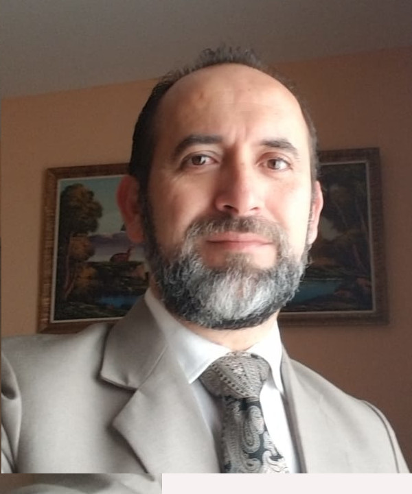

Gleiston Guerrero Ulloa
"La gloria de Dios es la Inteligencia"
Tel: 099 961 8561
Email: gguerrero@uteq.edu.ec
Web: www.gleiston.site
Ubicación: Quevedo, Ecuador
Perfil Profesional
Docente tiempo completo en la Universidad Técnica Estatal de Quevedo, especializado en tecnologías de desarrollo de aplicaciones distribuidas y web. Instructor del Máster en Ciencia de Datos, módulo: Procesamiento en la Nube.
Experiencia Académica
- UTEQ (2000 - Actualidad): Docente en Ingeniería de Software, coordinador de prácticas, director de proyectos de vinculación y rediseñador del pensum.

- Universidad de Guayaquil (1998 - 2013): Coordinador académico, director de tesis, impulsor de nuevas carreras.
Educación
- Doctorado en TIC, Universidad de Granada (2018 - 2024)
- Máster en Desarrollo de Software, Universidad de Granada (2017 - 2018)
- MBA, Universidad Complutense de Madrid (2007 - 2009)
- Diplomados pedagógicos, UTEQ y Universidad de Guayaquil
- Ingeniería en Computación, ESPOL (1991 - 1997)
Publicaciones Destacadas
- TDDT4IoTS (2024): Herramienta basada en pruebas para generar automáticamente diagramas y pruebas para sistemas IoT.
- BellChat (2024): Aplicación web inclusiva para personas con discapacidad visual.
- IdeAir (2023): Sistema IoT que monitorea CO₂, temperatura y humedad para mejorar el ambiente interior.
Diseñado institucionalmente para la Universidad Técnica Estatal de Quevedo | Actualizado en 2025